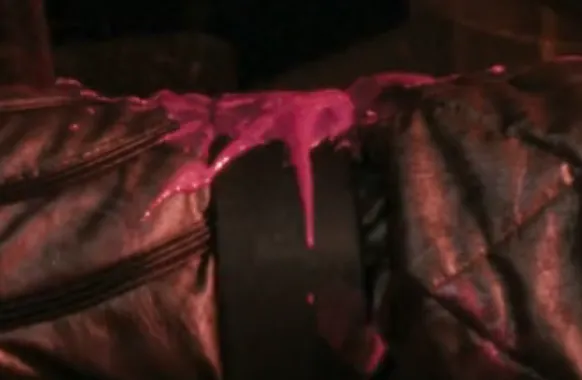
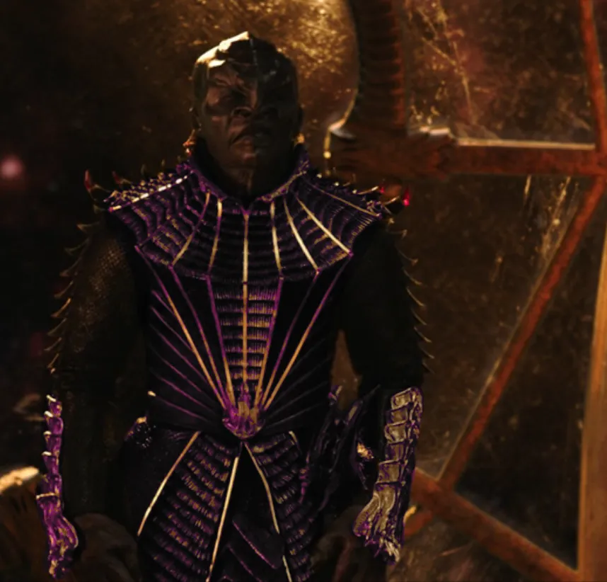
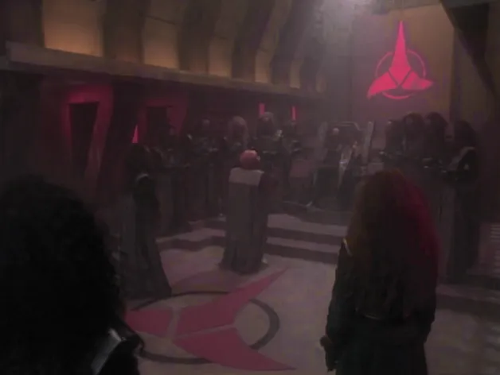
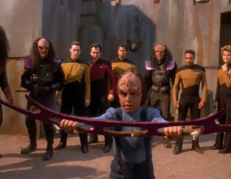
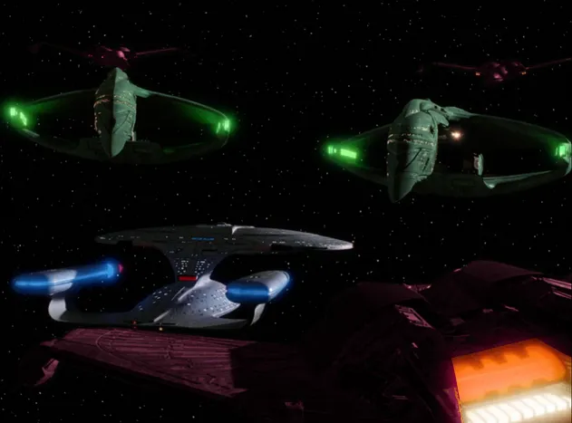
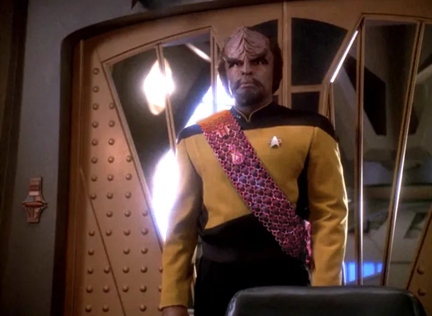
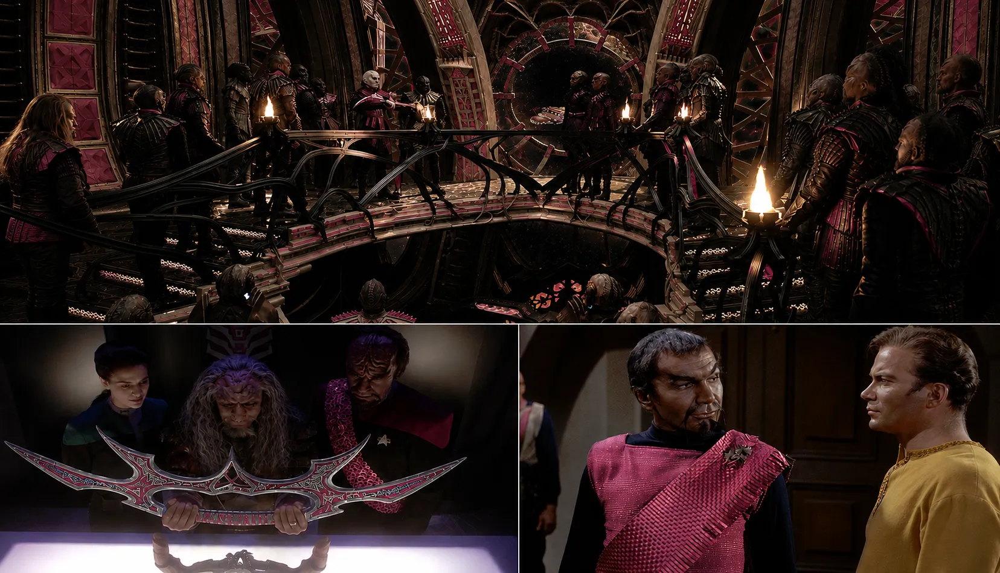

Everybody knows that Klingon blood is this viscous, opaque, sort of Pepto Bismol-like pink-colored substance, right? It was first famously depicted as such in the film Star Trek VI: The Undiscovered Country and is generally accepted as canon, even if there were some inconsistencies in other media. The Klingon culture takes honor and the warrior lifestyle very seriously, frequently incorporating blood into their culture's identity. They drink bloodwine, they take blood oaths, they feast on Rokeg blood pie... and they speak often of noble blood, house bloodlines, and shedding blood in battle. So, one might think that a species' identity that is so embroiled in blood might do honor to the noble Klingon's lifeforce by adorning their buildings, armor, blades, and sacred items in its color: pink!

What a great opportunity this could have been to subvert our usual (and silly) associations with the color pink. Imagine if, instead of picturing dolls and doilies, this warrior race considered pink to be the epitome of strength and valor! Just imagine seeing Klingon ships with pink livery... maybe even painted with actual warrior's blood. Imagine Klingon battle armor with pink accents. Imagine their blades forged from pink alloys. I mean, maybe not exactly the same pink we might associate with a Barbie™ dreamhouse, but maybe something a little more metallic and dynamic.
This could have even become a point of contention in dialog, with Klingons taking great offense when another species makes light of the color choice. How dare you mock the blood of a Klingon warrior! Well, I suppose considering the fact that it took a while for Klingons to find their footing from their Original Series origins as smooth-headed, dark-skinned humanoids with Fu Manchu mustaches that had to be retconned, I don't think this aesthetic choice was ever really in the cards, but it's fun to imagine a Klingon Empire adorned in pink. So, here are a few poorly-photoshopped images I made of what things might look like in a world where pink is a warrior's color. Enjoy! ◼




